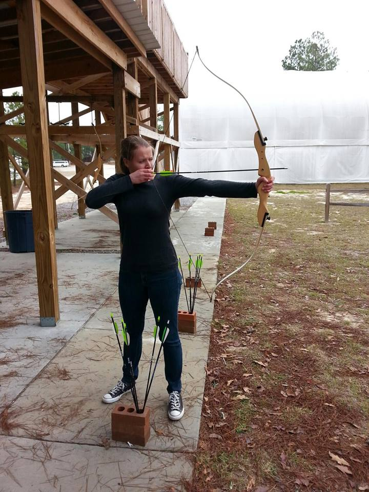
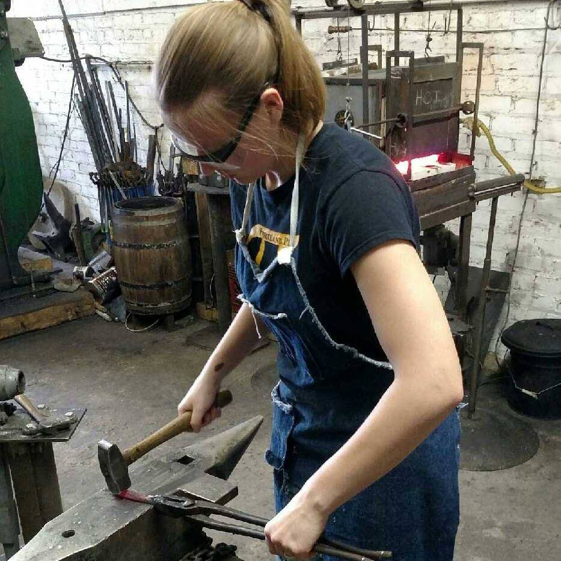
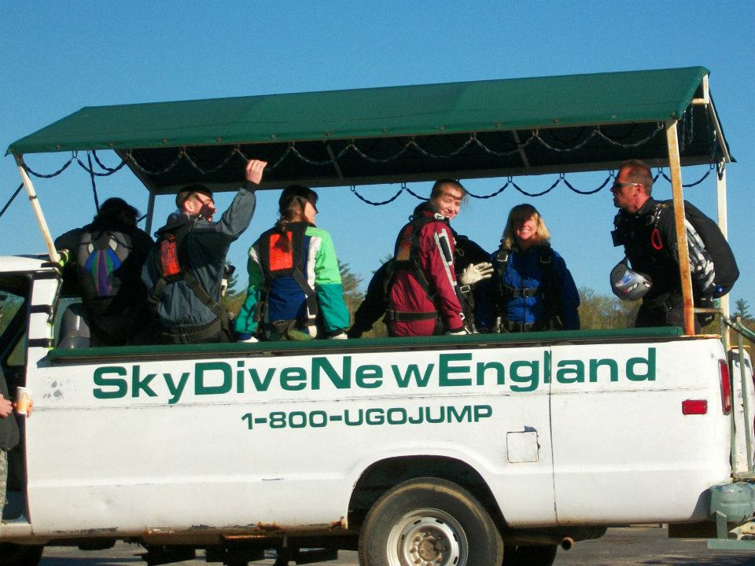

Marlene O’Connor-Beck is from Maine, she loves cats, cold weather and warm blankets, the forests, and all the animals, and especially Maple syrup. She is currently studying to be a Mechanical Engineer, and plans to pursue Aerospace Engineering afterwards. Her favorite movie is “My Neighbor Totoro” and her favorite book is “Name of the Wind”. She loves all animals, especially her own cats and dog. Marlene grew up in New England with her Mother and Father, surrounded by horses, her cats Apollo and Artemis and dogs. She loves New England winters because it is one of the best reasons to be curled up throughout the day with nothing better to do than drink hot chocolate, hang out under a pile of blankets and read a really great book. At 18 Marlene enlisted in the military and is almost five years into her first six-year commitment. She has traveled to many places around the world through the military and on her own. She one day hopes to work full time as an Aerospace Engineer back in the New England area while entertaining the idea of living and working abroad in Europe for a few years.
She enjoys blogging as well!
Marlene's favorite pet in the whole world. Her cat Apollo.

The first time Marlene went to blacksmithing class to learn to forge metal.

The first time that Marlene went skydiving, while still living in New England.